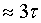
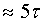

2. ПЕРЕХОДНЫЕ ПРОЦЕССЫ В ЛИНЕЙНЫХ ЦЕПЯХ ПЕРВОГО ПОРЯДКА
На рис. 14.1 и рис. 14.2 изображены схемы RL- и RC-цепей, входы которых подключаются к источникам постоянного напряжения U. В цепях первого порядка переходные процессы описываются экспоненциальными законами:
- для RL-цепи (рис. 14.1, а) ток и напряжение на индуктивной катушке:
iL(t) = I0(1- e-at) = I0(1- e-t/( ); uL(t) = L[diL(t)/dt] = Ue-at,
где I0 = U/R - установившийся ток; τ = L/R - постоянная времени в секундах; а = 1/τ - коэффициент затухания переходного процесса (1/c). Графики iL(t) и uL(t) представлены на рис. 14.1, б и в.

Анализ графиков показывает, что ток в RL-цепи постепенно нарастает до своего установившегося значения и тем медленней, чем больше постоянная времени τ - время, в течение которого переходная величина (ток в нашем случае) изменяется на 0,632 от своего размаха I0. Если снять осциллограмму переходного тока, то значение τ можно определить по длине подкасательной, получаемой после проведения касательной из точки 0 до пересечения с горизонтальной линией (I0) и опускания перпендикуляра на ось абсцисс (или используя другие точки осциллограммы для проведения касательной, например, точку 0,632I0 или точку 0,86I0 (см. рис. 14.1, б).
При инженерных расчётах время переходного процесса принимают равным tпп ; при этом переходная величина достигает порядка 0,95 своего установившегося значения. При более точных расчётах принимают tпп , при котором переходная величина, в нашем случае ток,
iL(5t) » 0,99I0.
На графике uL(t) (рис. 14.1, в) длина подкасательной на оси абсцисс определяет постоянную времени τ цепи, в течение которого значение напряжения uL(0+) = U уменьшается в e » 2,72 раза. Чем больше τ, тем медленнее уменьшается напряжение;
- для RC-цепи (рис. 14.2, а) напряжение и ток конденсатора:

uС(t) = U(1- e-t/( ); iС(t) = С[duC(t)/dt] = I0e-at = I0e-t/(,
где I0 = U/R - установившийся ток; τ = RС - постоянная времени; а = 1/τ - коэффициент затухания переходного процесса. Нормированные графики uC(t) и iC(t) представлены на рис. 14.21, б.
Если сравнить графики переходного тока iL и напряжения uL в RL-цепи (рис. 14.1, б) с током iC и напряжением uC в RC-цепи (рис. 4.19, б), то можно заключить, что графики iL и uL взаимно дуальны и противоположны графикам iC и uC; графики iL и uC, uL и iC внешне похожи, т. к. характер изменения переходных величин одинаковый.